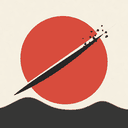

Ink Samurai
Mürekkep Samurayı — fırçan, kılıcın.
Nasıl oynanır?
- Samuray kendi kendine koşar. Ekrana parmağınla çizdiğin her çizgi bir kılıç darbesidir.
- Çizgi uzadıkça mürekkep harcanır; mürekkep zamanla ve düşman kestikçe dolar. Fırça ekrandayken zaman yavaşlar.
- Tek çizgiyle birden çok düşman kesersen bonus puan, mürekkep ve kombo kazanırsın.
- Okları havada kesebilirsin. Oni Lordu'nu yenmek için kızıl mührü kes.
- 3 canın var. Koşu bitince kazandığın mon ile Dōjō'da yeni samuraylar ve kılıç izleri açabilirsin.
Sık sorulanlar
İnternet gerekiyor mu? Hayır, oyun tamamen çevrimdışı çalışır. Liderlik tablosu için Game Center'a giriş yapmış olman yeterli.
Ses gelmiyor. Telefon sessiz modda olabilir; ana ekrandaki müzik ve ses simgelerini de kontrol et.
Mon nedir? Oyun içinde koşularla kazanılan puandır; gerçek parayla satılmaz.
İletişim
Soru, öneri veya hata bildirimi için: t44mehmet63@gmail.com
Geliştirici: Mehmet TÜRKMEN
Support
How to play
- Your samurai runs on his own. Every line you draw on the screen is a sword strike.
- Longer lines use more ink; ink refills over time and with every kill. Time slows while your brush is on the paper.
- Cut several enemies with one line for bonus points, ink and combo.
- You can slice arrows out of the air. To defeat the Oni Lord, cut his red seal.
- You have 3 lives. Spend the mon you earn in the Dōjō to unlock new samurai and blade trails.
FAQ
Do I need internet? No, the game works fully offline. Sign in to Game Center to use the leaderboard.
No sound? Your phone may be in silent mode; also check the music and sound icons on the home screen.
What is mon? An in-game currency earned by playing; it is never sold for real money.
Contact
Questions, ideas or bug reports: t44mehmet63@gmail.com
Developer: Mehmet TÜRKMEN